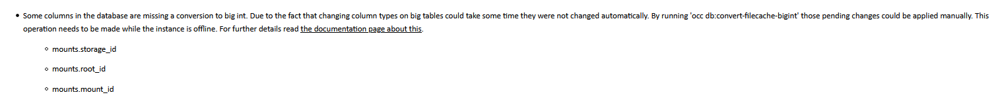
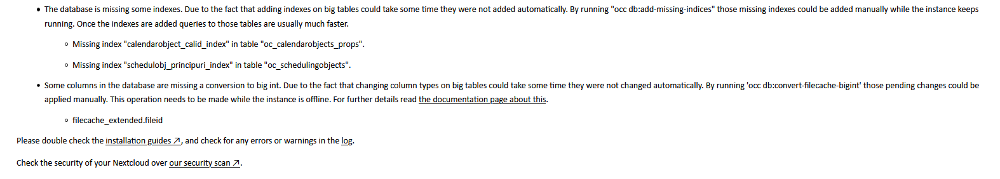
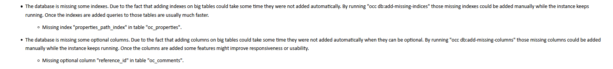
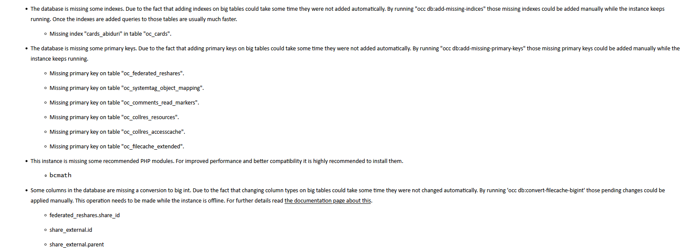
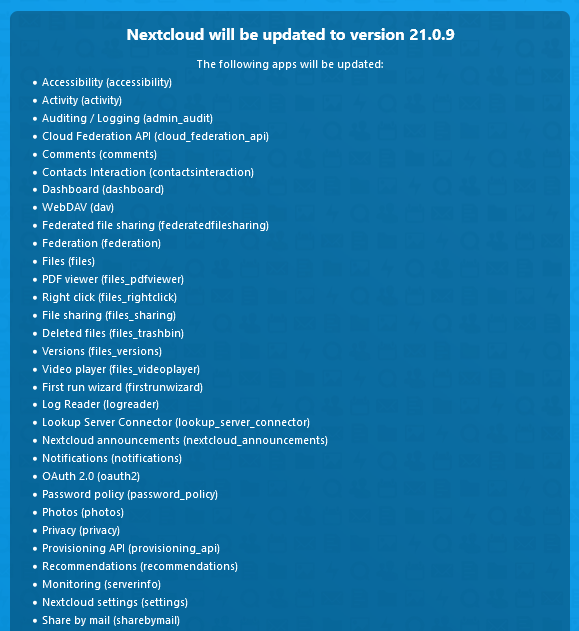
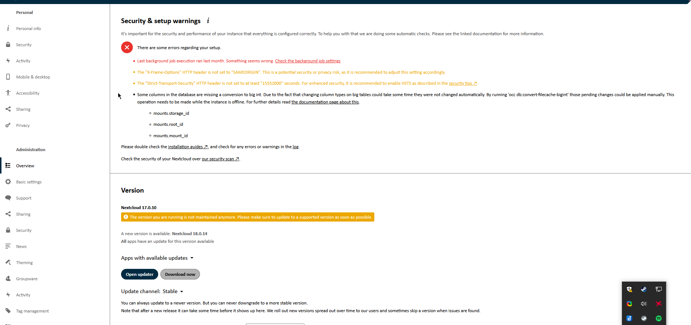

Upgrade LinuxServer/Nextcloud Container Manually
Upgrade LinuxServer/Nextcloud Container Manually
This guide will show you how to manually upgrade linuxserver/nextcloud Docker container.
Normally, Nextcloud upgrades are done by pressing and Update button in the settings page, but for me, it did not work.
Because, I was running my Nextcloud 16 with a path prefix e.g. example.com/nextcloud.
Automatic updates do not work with path prefixes (they only work with domains or subdomains).
Each heading will guide you through steps needed to upgrade from one major version to the next major version. Plan ahead, because Nextcloud downtime is expected.
General Prerequisites
- This guide assumes you are using
docker-compose.ymlfiles for managing your Nextcloud instance.- If not, you will need to stop your database manually after you stop your container
- Access to the host's shell (not the docker container shell).
- Access to the
config/folder as mounted on the host. wgetinstalled on the host.- Name (or hash) of the upgraded container (in my case
nextcloud).- Run
docker ps -a | grep nextcloudto see the name and hash.
- Run
Sections below Upgrading to version X to X+1 are almost identical. Each major version heading, has subheadings for fixing database issues that occur after the upgrade.
Upgrade one major version at a time. Do not do something stupid like upgrading from Nextcloud 17 to 19. Skipping major versions, can break your Nextcloud installation permanently.
Upgrading from version 16 to 17
first stop current compose containers:
docker-compose stop
go to Nextcloud configuration directory on host:
cd <your nextcloud dir>/www/nextcloud
move old configuration to old folder:
mv nextcloud nextcloud-old-16
wget -O nextcloud-17.zip https://download.nextcloud.com/server/releases/nextcloud-17.0.10.zip
unzip nextcloud-17.zip
move old used files:
cp nextcloud-old-17/config/* nextcloud/config/
cp -r nextcloud-old-17/data nextcloud/data/
cp -r nextcloud-old-17/apps/ nextcloud/apps/
Continue to Completing the Upgrade
Fixing related issues 16 to 17

Attach to your container:
docker exec -it nextcloud bash
cd /config/www/nextcloud
Convert to big int source:
sudo -u abc php occ db:convert-filecache-bigint
(Optional) After the command completes exit the container:
exit
Continue to Issue Verification
Upgrading from version 17 to 18
first stop current compose containers:
docker-compose stop
go to Nextcloud configuration directory on host:
cd <your nextcloud dir>/www/nextcloud
move old configuration to old folder (in my case old version was 17)
mv nextcloud nextcloud-old-17
wget -O nextcloud-18.zip https://download.nextcloud.com/server/releases/nextcloud-18.0.14.zip
unzip nextcloud-18.zip
move old used files:
cp nextcloud-old-17/config/* nextcloud/config/
cp -r nextcloud-old-17/data nextcloud/data/
cp -r nextcloud-old-17/apps/ nextcloud/apps/
Continue to Completing the Upgrade
Fixing related issues 17 to 18

attach to your container:
docker exec -it nextcloud bash
cd /config/www/nextcloud
add missing indices:
sudo -u abc php occ db:add-missing-indices
convert to big int:
sudo -u abc php occ db:convert-filecache-bigint
Continue to Issue Verification
Upgrading from version 18 to 19
First stop current compose containers:
docker-compose stop
go to Nextcloud configuration directory (on host):
cd <your nextcloud dir>/www
move old configuration to old folder (in my case old version was 18)
mv nextcloud nextcloud-old-18
wget -O nextcloud-19.zip https://download.nextcloud.com/server/releases/nextcloud-19.0.13.zip
unzip nextcloud-19.zip
move old used files:
cp nextcloud-old-18/config/* nextcloud/config/
cp -r nextcloud-old-18/data nextcloud/data/
cp -r nextcloud-old-18/apps/ nextcloud/apps/
Continue to Completing the Upgrade
Fixing related issues 18 to 19

attach to your container:
docker exec -it nextcloud bash
cd /config/www/nextcloud
add missing indices:
sudo -u abc php occ db:add-missing-indices
add optional columns:
sudo -u abc php occ db:add-missing-columns
Continue to Issue Verification
Upgrading from version 19 to 20
First stop current compose containers:
docker-compose stop
go to Nextcloud configuration directory (on host):
cd <your nextcloud config dir>/config/www
move old configuration to old folder (in my case old version was 18)
mv nextcloud nextcloud-old-19
wget -O nextcloud-20.zip https://download.nextcloud.com/server/releases/nextcloud-20.0.11.zip
unzip nextcloud-20.zip
move old used files:
cp nextcloud-old-19/config/* nextcloud/config/
cp -r nextcloud-old-19/data nextcloud/data/
cp -r nextcloud-old-19/apps/ nextcloud/apps/
Continue to Completing the Upgrade
Fixing related issues 19 to 20

attach to your container:
docker exec -it nextcloud bash
cd /config/www/nextcloud
add missing indices:
sudo -u abc php occ db:add-missing-indices
add missing primary keys:
sudo -u abc php occ db:add-missing-primary-keys
do big int conversion
sudo -u abc php occ db:convert-filecache-bigint
Continue to Completing the Upgrade
Upgrading from version 20 to 21
First stop current compose containers:
docker-compose stop
go to Nextcloud configuration directory (on host):
cd <your nextcloud config dir>/config/www
move old configuration to old folder
mv nextcloud nextcloud-old-20
wget -O nextcloud-21.zip https://download.nextcloud.com/server/releases/nextcloud-21.0.9.zip
unzip nextcloud-21.zip
move old used files:
cp nextcloud-old-20/config/* nextcloud/config/
cp -r nextcloud-old-20/data nextcloud/data/
cp -r nextcloud-old-20/apps/ nextcloud/apps/
start the container again:
docker-compose start
Continue to Completing the Upgrade
Fixing related issues 20 to 21
attach to your container:
docker exec -it nextcloud bash
cd /config/www/nextcloud
add missing indices (in the container):
sudo -u abc php occ db:add-missing-indices
exit
Continue to Completing the Upgrade
Upgrading from version 21 to 22
First stop current compose containers:
docker-compose stop
go to Nextcloud configuration directory (on host):
cd <your nextcloud config dir>/config/www
move old configuration to old folder
mv nextcloud nextcloud-old-21
wget -O nextcloud-22.zip https://download.nextcloud.com/server/releases/nextcloud-22.2.9.zip
unzip nextcloud-22.zip
move old used files:
cp nextcloud-old-21/config/* nextcloud/config/
cp -r nextcloud-old-21/data nextcloud/data/
cp -r nextcloud-old-21/apps/ nextcloud/apps/
start the container again:
docker-compose start
Continue to Completing the Upgrade
Fixing related issues 21 to 22
attach to your container:
docker exec -it nextcloud bash
cd /config/www/nextcloud
add missing indices (in the container):
sudo -u abc php occ db:add-missing-indices
exit
Upgrading from version 22 to 23
First stop current compose containers:
docker-compose stop
go to Nextcloud configuration directory (on host):
cd config/www
move old configuration to old folder
mv nextcloud nextcloud-old-22
wget -O nextcloud-23.zip https://download.nextcloud.com/server/releases/nextcloud-23.0.6.zip
unzip nextcloud-23.zip
move old used files:
cp nextcloud-old-22/config/* nextcloud/config/
cp -r nextcloud-old-22/data nextcloud/data/
cp -r nextcloud-old-22/apps/ nextcloud/apps/
start the container again:
docker-compose start
Continue to Completing the Upgrade
Fixing related issues 22 to 23
During the upgrade I noticed that Nextcloud complained about some environment variables were not set I ignored this message and my upgrade was still successful.
WARNING: The MEDIA_NEXTCLOUD_ROOT variable is not set. Defaulting to a blank string.
WARNING: The PROXY_NETWORK variable is not set. Defaulting to a blank string.
WARNING: The NETWORK_DB_GLOBAL variable is not set. Defaulting to a blank string.
attach to your container:
docker exec -it nextcloud bash
cd /config/www/nextcloud
add missing indices (in the container):
sudo -u abc php occ db:add-missing-indices
exit
Completing the Upgrade
This section is based on the official guide and is adapted for linuxserver/nextcloud containers
start compose containers:
cd <compose file dir>
docker-compose up -d
docker exec -it nextcloud bash
At this point you have two options how to upgrade your installation:
- Option 1 (easy), you rely on Nextcloud auto-update from the browser.
- Option 2 (harder), you use Nextcloud CLI inside the docker container.
Completion Option 1 (easy)
Go to your Nextcloud instance (example.com/nextcloud) and follow the instruction on the web in order to complete the installation (I only tested this when upgrading from versions 21 up to 23).

Completion Option 2 (harder)
Attach to your container:
docker exec -it nextcloud bash
cd /config/www/nextcloud
change file permissions inside the container:
cd /config/www/
chown -R abc:abc nextcloud
find nextcloud/ -type d -exec chmod 750 {} \;
find nextcloud/ -type f -exec chmod 640 {} \;
call the actual upgrade command:
cd /config/www/nextcloud
sudo -u abc php occ upgrade
after update is complete exit:
exit
restart the containers:
docker-compose restart
Continue to Issue Verification
Issue Verification
Almost done, open your Nextcloud URL example.com/nextcloud/settings/admin/overview in the browser and verify that it is still running.
Verify the Nextcloud version Settings → Overview → Version
If under Settings → Overview → Security & Setup you see a message like
“There are some errors regarding your setup.”

Continue to related guides to fix the issues (if needed)
- When you see no errors, you are done. Or continue upgrading to next major version.
- Fixing related issues 16 to 17
- Fixing related issues 17 to 18
- Fixing related issues 18 to 19
- Fixing related issues 19 to 20
- Fixing related issues 21 to 22
- Fixing related issues 22 to 23
You may also want to consider upgrading your Nextcloud docker container to match the version your new Nextcloud installation, so that environment has all the dependencies needed. Nextcloud is quite forgiving if you do not upgrade them, but you will definitely need to do this when you reach version 23.
In my case I only upgraded my Docker image when I reached version 23 and verified, that Nextcloud was running beforehand.